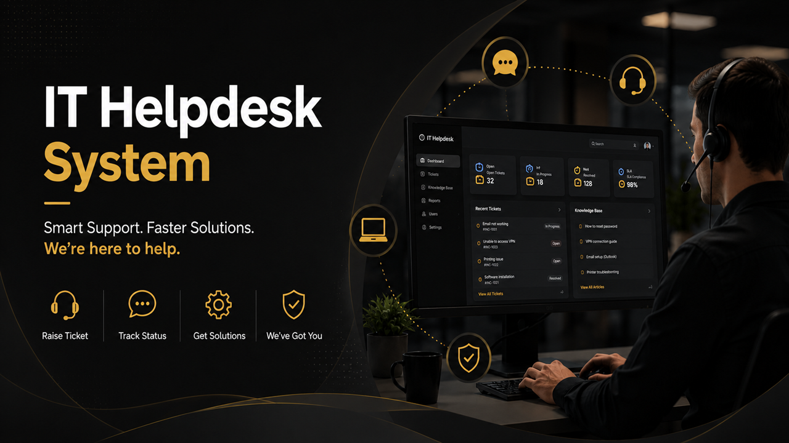
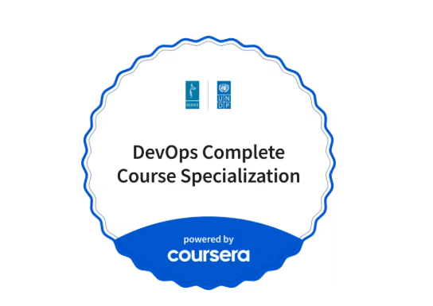
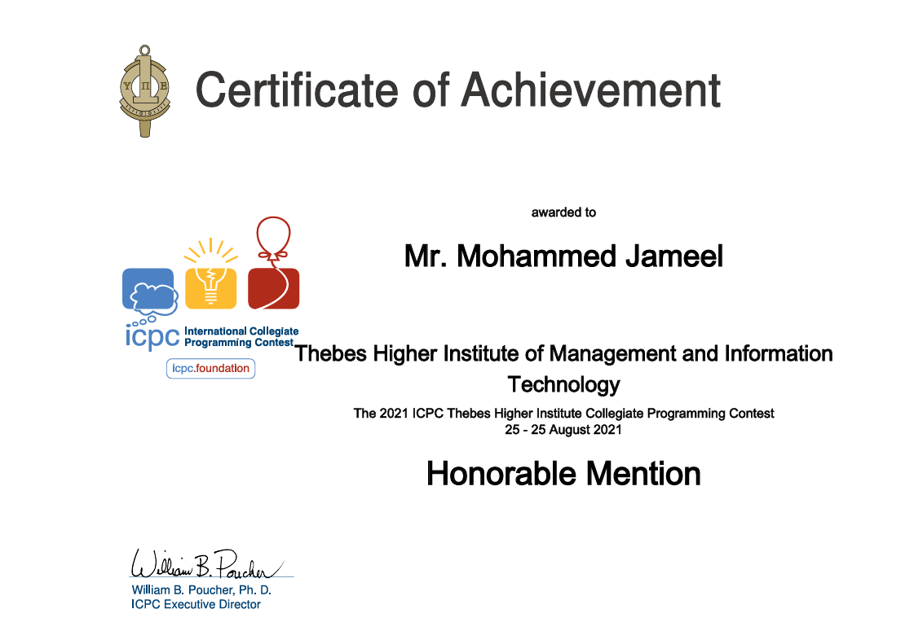
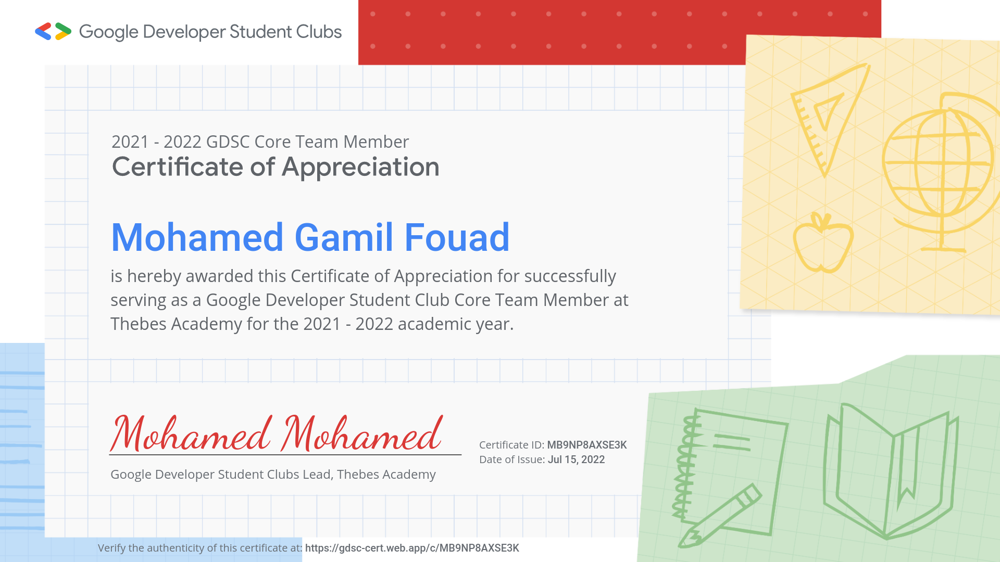

Hi, I am
Mohammed Jameel
Full Stack Developer DevOps Engineer
0
Years Experience
0
Finished Projects
0
Community Members

Hi, I am
0
0
0
3+
6+
3+
5000+
I'm Mohammed Jameel Fouad, a Junior DevOps Engineer based in Cairo, Egypt. I hold a Bachelor's degree in Computer Science from Thebes Academy with a GPA of 3.04.
With a strong foundation in IT Infrastructure and System Administration, I bring deep understanding of networking, security, and system integrity. I'm eager to leverage my automation skills to streamline deployment processes and ensure high availability.
I led the GDG on Campus chapter at Thebes Academy, organizing events and hackathons that engaged 5000+ participants.
My career objective is to grow as a DevOps & Full Stack Engineer, building scalable cloud infrastructure and contributing to high-impact software projects that bridge the gap between development and operations.

A comprehensive IT ticket management system to streamline support request handling across organizations.

A C++ based system for managing students and courses with an intuitive interface.

An interactive table reservation app for Little Lemon restaurant with a modern UI.

Coursera — 2026
Comprehensive specialization covering the complete DevOps lifecycle including version control, continuous integration, continuous delivery, infrastructure automation, monitoring, and collaboration practices.
View Certificate
Coursera — 2026
Advanced course covering modern DevOps tools and practices including CI/CD pipelines, infrastructure as code, containerization, orchestration, and monitoring solutions for production environments.
View Certificate
Amazon Web Services — 2026
Focused on monitoring, managing, and automating AWS workloads using CloudWatch, CloudTrail, Systems Manager, and Auto Scaling. Learned how to ensure high availability, cost optimization, and operational excellence.
View Certificate
Amazon Web Services — April 2026
Learned how to build cloud-native applications using AWS services like Lambda, API Gateway, DynamoDB, S3, and Cognito. Covered serverless architecture, event-driven design, and deploying scalable apps on AWS.
View Certificate
Amazon Web Services — 2026
Covered the fundamentals of cloud computing and core AWS services including EC2, S3, VPC, IAM, and RDS. Gained understanding of AWS global infrastructure, pricing models, and security best practices.
View Certificate
Meta — April 2026
A 9-course professional certificate covering HTML, CSS, JavaScript, React, UI/UX design principles, version control with Git, and building accessible, responsive web applications ready for production.
View Certificate
IBM — April 2026
Learned Agile and Scrum methodologies for delivering high-quality software iteratively. Covered sprint planning, retrospectives, continuous improvement, and how to collaborate effectively in fast-paced development teams.
View Certificate
Udemy — Cross-platform Mobile
Built cross-platform mobile applications for iOS and Android using Flutter and Dart. Covered widgets, state management, navigation, REST API integration, and publishing apps to app stores.
View Certificate
Contestant — Aug 2021
Competed as a contestant in Egypt's top collegiate programming contest. Solved algorithmic and data structure problems under time pressure using C++, competing against teams from universities across Egypt.

GDG on Campus (formerly GDSC) — Thebes Academy
Led a chapter of 500+ members and organized events for 5000+ attendees
Organized workshops, hackathons, and tech events
Built partnerships with tech industry companies
Promoted knowledge sharing through technical workshops

GDG on Campus (formerly GDSC) — Thebes Academy
Managed all technical aspects of online and offline events as a Core Team Member
Handled live broadcasting using StreamYard
Developed strategic plans to boost chapter presence
Want to discuss a project? I'm always excited to hear new ideas!
Online